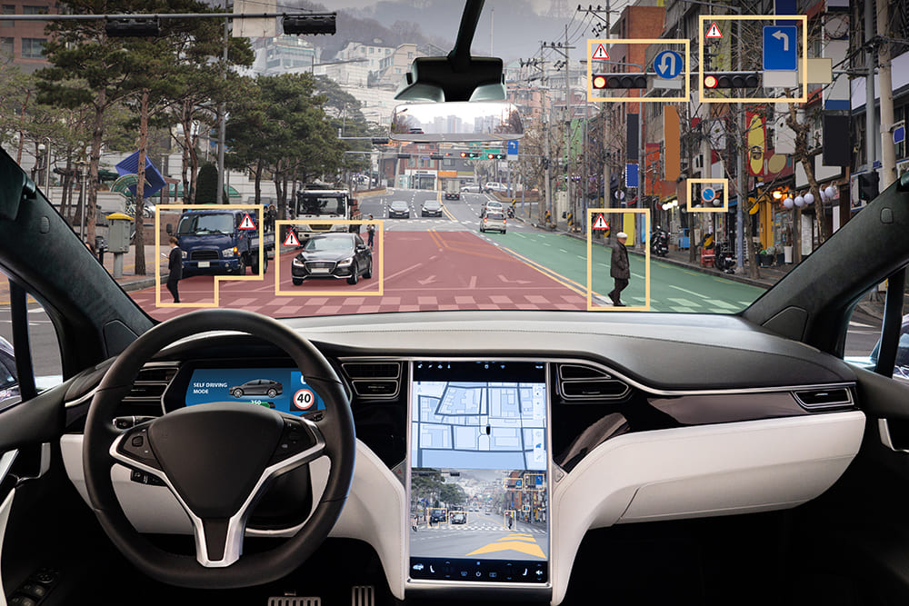
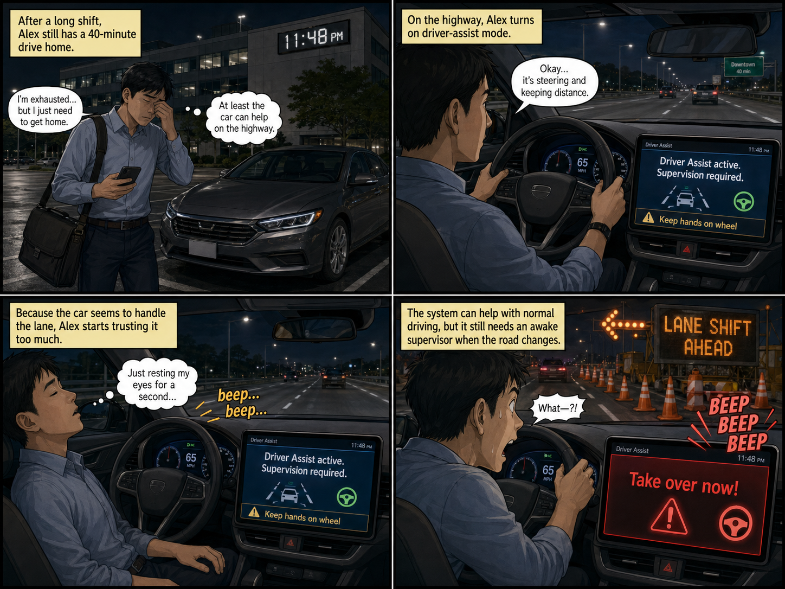
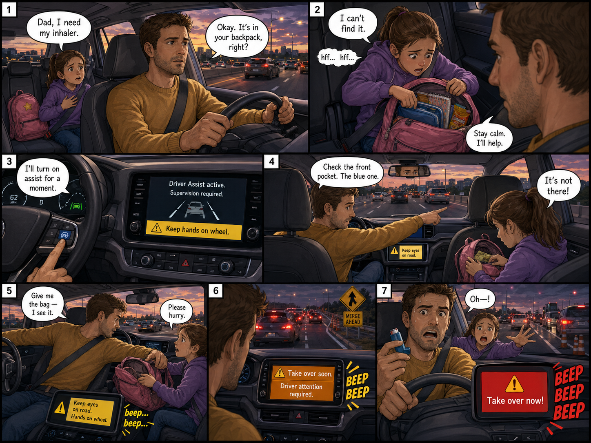
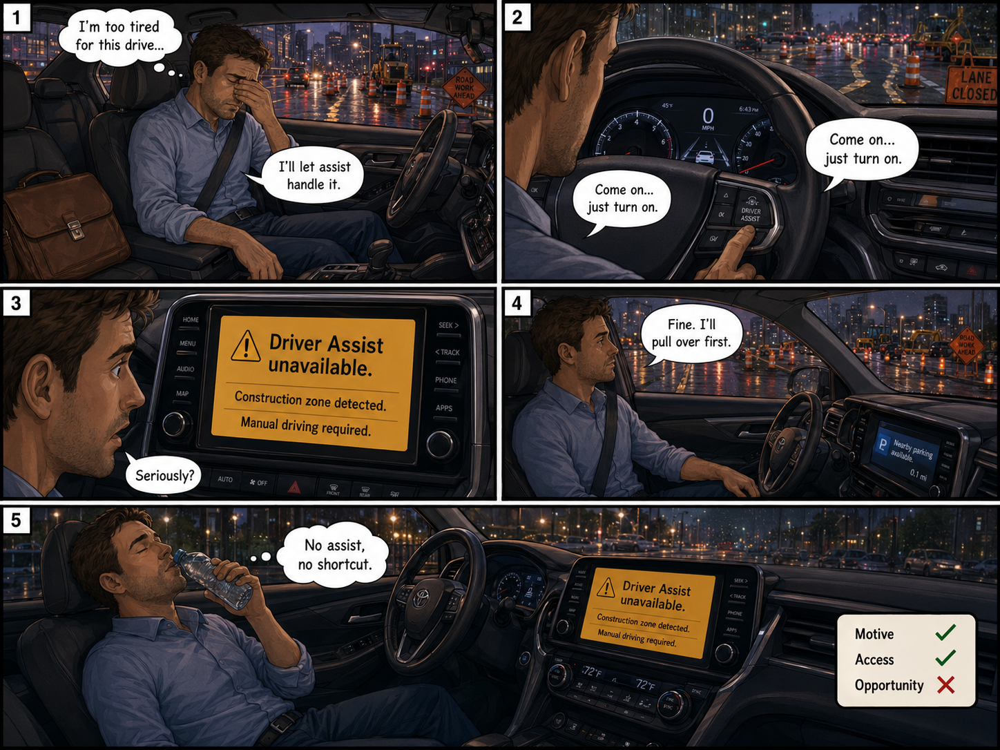

🚗';"/>Most analyses ask what a product does. Scenario-based analysis asks who's around it. You imagine real situations - people, tensions, relationships, and check whether the product changes what's possible in those situations. Misuse rarely shows up in the spec sheet. It shows up in the scenario.
When all three line up, a product becomes a misuse vector.
Three situations. Which would you investigate first for possible misuse?



In these scenarios, the risk appears when three things line up:
MAO helps you ask: not "is this feature dangerous?", but "in this scenario, does the feature enable misuse?"